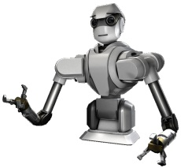
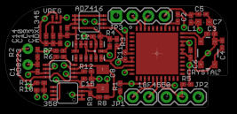
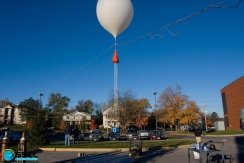
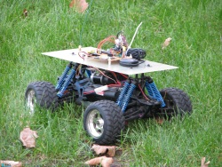
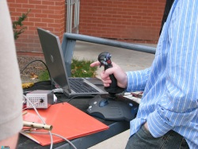
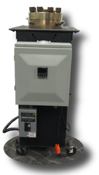

Summary
This page will highlight the major projects that I've done while at Iowa State University
(ISU). This list is not comprehensive,
but shows that work which I'm most proud of. Four projects will be shown below. Note that all the projects are highly integrated
with hardware and will not function properly without the associated hardware. Therefore no source code will be provided.
Senior Design
My
senior design project put much what I've learned at ISU to the test. With over 350 hours on this project alone,
I have learned what I'm capable of and how to better work with my fellow team members.
The project was to design an artificial fingernail for a humaniod robot. The fingernail would contain sensors, such as
an accelerometer and a microphone, that would allow it to recognize surfaces simply by scratching them. My responsibilities for this project were to
choose and program the microcontroller, help choose the other sensors, and lay the whole thing out on a PCB that would fit the tiny space
within the robot's fingertip.

Design Document
Project Poster
Senior Design Website
Flight and Logistics Console (FALCON)
Almost
on par with my Senior Design project, FALCON has been the focus of much of my attention during my time at ISU.
The FALCON project is center to the high-altitude balloon experiments in the Space Systems and Controls Lab (SSCL) located in Howe Hall.
FALCON tracks the balloons as they rise as high as 120,000 ft and parachute back down. The tracking is done by transmitting GPS information
via amateur radio, back to the lab's ground station. There FALCON parses the incoming transmission, logs flight data and plots the flight
path in Google Maps and Google Earth. For each position update, the program also generates a new prediction path that the balloon will
take to return.

 My
responsibility for this project was at first the complete program creation. To that end I created an alpha version with all the features
described above. Recently, however, more students have become involved with the project and more features have been requested. As such I have
transitioned from only coding to also teaching the new students about the project and helping them get started coding for it as well.
My
responsibility for this project was at first the complete program creation. To that end I created an alpha version with all the features
described above. Recently, however, more students have become involved with the project and more features have been requested. As such I have
transitioned from only coding to also teaching the new students about the project and helping them get started coding for it as well.
Autonomous Jeep (AJ)
Also hosted by the SSCL lab, the AJ project served as a research platform for an aerospace graduate student. The goal of the project
was to radio control a jeep using software running on a laptop. The software would then drive the jeep through a series of GPS waypoints
using the algorithm being researched by the graduate student.

My
role for this project was to implement the algorithm in software, to log and parse the GPS data, to control the flow of waypoints, and to
provide a joystick interface for driving the jeep as an alternative method to set the waypoints. This was my first real exposure to
control theory that later led me to choosing it as my electrical engineering focus.
Venus Chamber Controls
The
Venus Chamber project was funded by the Iowa Space Grant Consortium (ISGC). The project was to create a chamber capable of simulating
the atmospheric conditions on the surface of Venus. Those conditions are extreme by our standards - 500 degrees Celsius and 1400 PSi.
Before my involvement in the project a chamber was acquired and outfitted with all the gauges and controls necessary to monitor its
temperature and pressure. Basic software was written to log the guage readings.
My role when joining this project was to fix existing problems with the software and modify any electronics necessary to establish
reliable control of the chamber. The experiments would run for at least 4 hours at a time, so the software needed to be remote capable as
well. For this I wrote a control program using LabView and fixed a couple of wiring issues with the PLC safety backup controller and
the power switching board. Then after everything was working I wrote a user manual for how to setup and run the chamber.
Ultimately, the chamber was sold to the Goddard Space Flight Center.
Following the sale I went to Goddard with the ISGC director to train the new owners.
This project was eye-opening to the level of professionalism at NASA and to the safety and reliability needed in some projects.